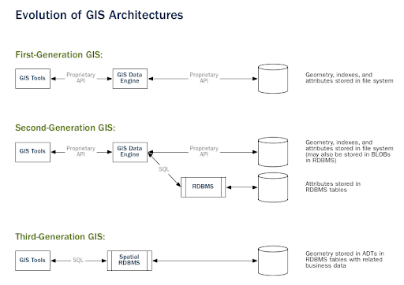
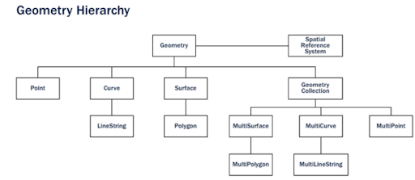
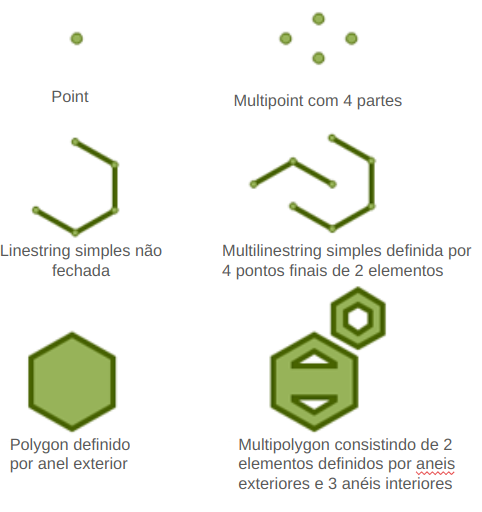
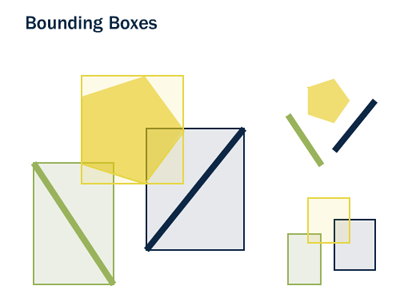
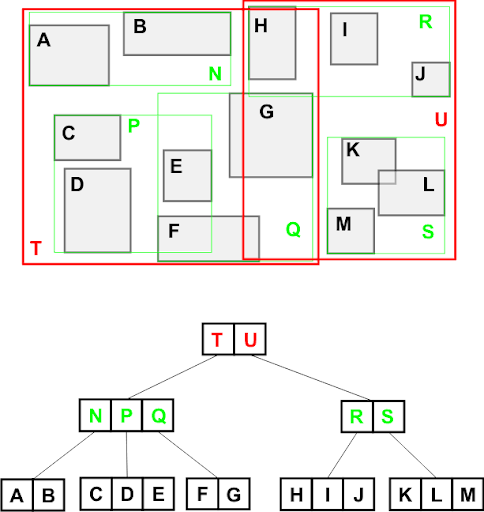
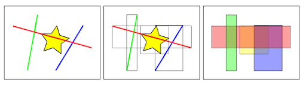

3. FUNDAMENTOS E PRÁTICAS EM BANCOS DE DADOS ESPACIAIS#
A tecnologia geoespacial tem experimentado uma evolução constante, passando de simples mapas e imagens digitalizadas para ferramentas sofisticadas e integradas aplicáveis em diversas áreas, auxiliando na resolução de problemas, na tomada de decisão e no entendimento dos sistemas ambientais e sociais do planeta (Dangermond e Goodchild, 2020). Atualmente, as tecnologias geoespaciais, que englobam a Geoinformática e a Ciência da Informação Geográfica (GIScience), são indispensáveis não apenas para o planejamento e a gestão, mas também para o desenvolvimento sustentável em diferentes escalas.
Ao longo das últimas décadas, a quantidade de dados coletados e armazenados vem crescendo exponencialmente. Esse fenômeno, muitas vezes descrito como “explosão de dados”, é impulsionado pela ubiquidade da internet, avanços tecnológicos em sensores e dispositivos de coleta de dados, bem como pela crescente digitalização de processos em todos os setores da sociedade. Estima-se que cerca de 80% dos dados coletados possuem uma componente espacial, evidenciando como a localização geográfica é intrínseca à maioria dos dados que coletamos. Esse acúmulo sem precedentes de dados espaciais destaca a necessidade de tecnologias de armazenamento e de processamento cada vez mais sofisticadas, capazes de lidar com essa grande quantidade de informações.
A superação dos limites impostos pela dependência de interfaces gráficas de usuário (Graphical User Interface - GUI) em Sistemas de Informações Geográficas, através do domínio da linguagem SQL e de linguagens de programação, facilita a adoção de métodos sofisticados para a manipulação de dados espaciais. Nesse cenário, os bancos de dados espaciais surgem como uma alternativa não só para o armazenamento e o gerenciamento desses dados, como também para o seu processamento e a análise.
Um banco de dados espacial é um banco de dados com tipos de dados projetados especificamente para armazenar objetos que tem uma componente espacial - esses tipos de dados podem ser adicionados às tabelas do banco de dados. Os dados armazenados geralmente são de natureza geográfica, como a localização de um ponto ou o limite de um lago. Um banco de dados espacial também fornece funções e índices para consultas e manipulação dos dados espaciais, que podem ser chamados a partir de uma linguagem de consulta, como a SQL. Apesar de muitas vezes serem utilizados apenas para armazenar dados espaciais, os bancos de dados espaciais podem fazer muito mais do que isso (Obe e Hsu, 2021), pois são projetados para armazenar, gerenciar e manipular objetos espaciais, tratando-os de maneira semelhante a outros tipos de dados.
Para integrar dados espaciais em um banco de dados, utiliza-se tipos de dados específicos que são otimizados para operações espaciais, como GEOMETRY ou GEOGRAPHY. Tais tipos permitem o armazenamento de elementos vetoriais e suas propriedades associadas, possibilitando que o SGBD realize operações como sobreposições espaciais, cálculos de proximidade e análises topológicas.
Os bancos de dados espaciais normalmente aderem a padrões estabelecidos por organizações como o Open Geospatial Consortium (OGC, 2023), que define padrões como o Simple Features, um padrão comum para representação de objetos geográficos.
Os bancos de dados espaciais utilizam uma série de funções e métodos especializados para armazenar, indexar e consultar dados espaciais. Eles incluem:
Funções geométricas e geográficas: Para calcular distâncias, áreas, perímetros, etc.;
Índices espaciais: Como R-trees ou quad-trees, que tornam as operações de busca e recuperação muito mais rápidas do que as técnicas de indexação tradicionais;
Consultas espaciais: Que permitem realizar buscas com base na localização e na relação espacial entre objetos, como encontrar todos os objetos que estão a uma determinada distância de um ponto. Além disso, as funções espaciais, implementadas por meio de consultas SQL, possibilitam a análise e a consulta de propriedades e relações espaciais entre os objetos. Essas funções são essenciais para extrair informações como distâncias, intersecções e adjacências.
A integração entre tipos de dados espaciais, índices espaciais e funções espaciais proporciona uma estrutura tanto robusta quanto adaptável, assegurando eficiência no processamento de dados espaciais.
3.1 Breve histórico do desenvolvimento dos bancos de dados espaciais#
O desenvolvimento dos bancos de dados espaciais reflete a evolução da capacidade humana de organizar e interpretar dados relacionados ao espaço físico. Tudo começou com a necessidade de mapear territórios, gerenciar recursos naturais e planejar o uso urbano. Os primeiros indícios desse tipo de sistema podem ser encontrados em mapas e nos registros cadastrais antigos, em que a informação espacial era documentada de forma manual e analógica. No entanto, foi com o advento da computação que os bancos de dados espaciais começaram a se desenvolver como um campo próprio.
Nos anos 1960 e 1970, a integração dos sistemas de informações geográficas (SIG) com a tecnologia de banco de dados começou a tomar forma. A disponibilidade crescente de dados de sensoriamento remoto e o desenvolvimento de algoritmos complexos para o seu processamento foram essenciais para esse avanço.
A evolução dos bancos de dados espaciais é marcada por uma série de inovações e a integração de funcionalidades geoespaciais em diversas plataformas. Desde os primórdios na década de 1970, quando Raymond Boyce e Donald Chamberlin, pesquisadores da IBM, desenvolveram a linguagem SQL, inspirados pelo trabalho de Edgar Frank Codd, até a ampla adoção comercial pela Oracle, a trajetória tem sido de expansão e melhoria nas capacidades de análise espacial.
O desenvolvimento dos bancos de dados espaciais ao longo dos anos reflete um marco na tecnologia da informação geoespacial, começando em 1994 com o lançamento do Illustra Spatial por Michael Stonebraker, marcando a introdução do primeiro banco de dados SQL com tipos de dados e funções espaciais. Este esforço evoluiu rapidamente, com a Oracle introduzindo a Spatial Data Option (SDO) em 1995, desenvolvida em parceria com o Serviço Hidrográfico Canadense, seguida pela aquisição da Illustra pela Informix em 1996, que resultou na integração com o MapInfo através do Informix Spatial Datablade. A Oracle continuou a inovar com o lançamento do Oracle Spatial no Oracle 8i em 1998, incorporando protocolos de internet nativos.
A necessidade de suporte avançado para geometria no PostgreSQL levou ao nascimento do PostGIS em 2001, um esforço liderado pela Refractions Research e Paul Ramsey. Em 2002 e 2003, a IBM lançou o DB2 Spatial Extender e, após a aquisição da Informix, lançou o Spatial Extender compatível com a suíte de produtos da Esri, destacando uma trajetória de colaboração e inovação contínua na integração de capacidades geoespaciais em sistemas de gerenciamento de banco de dados. Em 2003, o Open Geospatial Consortium realizou um marco significativo na história do processamento de dados geoespaciais com o lançamento do SQL/MM Spatial Standard. Este evento não apenas uniformizou a abordagem para a manipulação de dados espaciais nos sistemas de gestão de banco de dados, mas também ampliou significativamente a acessibilidade e a aplicabilidade do Spatial SQL.
A adoção deste padrão por plataformas renomadas como Spatialite, Microsoft SQL e MySQL foi um testemunho do seu impacto transformador, facilitando uma interface comum para a manipulação e análise de dados geoespaciais. Essa padronização ofereceu aos desenvolvedores e analistas uma base sólida para a construção de aplicações complexas de mapeamento, análise territorial e gerenciamento de recursos, consolidando o Spatial SQL como uma ferramenta indispensável no contexto da tecnologia geoespacial.
Entre 2005 e 2009, o cenário dos bancos de dados espaciais testemunhou avanços significativos, marcando uma era de amadurecimento e expansão das capacidades geoespaciais nos sistemas de gerenciamento de banco de dados (SGBD). Em 2005, o PostGIS consolidou sua posição como uma ferramenta para análise espacial ao lançar sua primeira versão estável, PostGIS 1.0.
Poucos anos depois, em 2008, dois desenvolvimentos importantes ocorreram: a Microsoft introduziu suporte espacial no Microsoft SQL Server, ampliando as possibilidades de análise espacial no ambiente corporativo, e o SpatiaLite foi lançado como uma extensão espacial leve para o SQLite, oferecendo uma solução eficiente e compacta para aplicações que necessitam de capacidades geoespaciais em bancos de dados menores.
Em 2009, o MySQL também ingressou no domínio geoespacial com o lançamento de suporte para dados geoespaciais na versão 4.1, evidenciando a crescente demanda e a importância da análise espacial em diversas plataformas de SGBD. Esses desenvolvimentos refletem a evolução contínua da tecnologia geoespacial, facilitando o acesso e a manipulação de dados espaciais em uma variedade de contextos e aplicações.
Com o início do século XXI e o avanço da internet, os bancos de dados espaciais ganharam uma nova dimensão. A era dos dados massivos, ou Big Data, impulsionou o desenvolvimento de novas tecnologias para lidar com a escala e a complexidade dos dados espaciais. Serviços baseados em localização, como o Google Maps e o OpenStreetMap, revolucionaram a maneira como os indivíduos acessam e utilizam dados espaciais no cotidiano. Ao mesmo tempo, o desenvolvimento de padrões abertos e APIs facilitou a integração de dados espaciais em diversas aplicações, desde o planejamento urbano até a gestão de desastres.
O foco no processamento de “big data” evidenciou a necessidade de integrar capacidades geoespaciais em tecnologias de análise de grandes volumes de dados. Desta maneira, entre 2015 e 2023, o campo da análise de dados geoespaciais testemunhou uma série de inovações e integrações em diversas plataformas e tecnologias de processamento de dados, refletindo o crescente reconhecimento da importância dos dados espaciais em análises avançadas.
O início do GeoSpark em 2015, como uma extensão geoespacial do Apache Spark, marcou um avanço importante ao integrar funções geoespaciais em um motor de análise de grandes volumes de dados. Esta tendência continuou com o lançamento de funções GIS pelo GCP BigQuery em 2018, e em 2019, a AWS Redshift incorporou suporte para dados geoespaciais. O ano de 2021 foi particularmente notável, com o GeoSpark evoluindo para o Apache Sedona e sendo adotado no ecossistema Apache em modo de incubação, o Apache Pinot adicionando suporte para dados geoespaciais e o Snowflake lançando sua própria funcionalidade geoespacial.
Em 2022, o Databricks anunciou suporte para índices espaciais H3, e em 2023, o DuckDB ampliou suas capacidades com suporte nativo para a extensão SPATIAL. Esses desenvolvimentos sublinham uma evolução contínua e a integração de capacidades geoespaciais em plataformas de análise de dados, destacando a demanda crescente e a aplicabilidade da análise espacial em diversas indústrias e casos de uso.
Atualmente, os bancos de dados espaciais constituem componentes essenciais em diversos sistemas críticos, adaptando-se continuamente aos desenvolvimentos em computação em nuvem, inteligência artificial e aprendizado de máquina. Observa-se uma expansão significativa no âmbito dos bancos de dados SQL espaciais, Data Warehouses e ferramentas correlatas, marcada por uma adesão sem precedentes ao Spatial SQL. Esta tendência amplia as oportunidades de aplicação de um conhecimento unificado em variadas ferramentas, abrangendo tanto processos de ETL/ELT quanto sistemas de consulta distribuída, como Trino e PrestoDB, e reafirma a relevância do SQL espacial na engenharia de dados atual (Forrest, 2023). Tal evolução não somente evidencia progressos tecnológicos notáveis, mas também ressalta a importância crescente da análise espacial em processos decisórios baseados em localização, influenciando decisivamente a maneira como analisamos e compreendemos os dados geoespaciais no contexto digital moderno.
3.2 Evolução da arquitetura de Sistemas de Informações Geográficas#
A figura abaixo apresenta, de maneira esquemática e simplificada, a evolução da arquitetura de Sistemas de Informações Geográficas.

Figura 5: Evolução da arquitetura de SIG (Fonte: Postgis, 2024)
Primeira Geração: Sistemas Fechados
A primeira geração dos Sistemas de Informações Geográficas (SIG) caracterizou-se pelo uso de sistemas fechados e proprietários. Neste estágio inicial, o gerenciamento e a manipulação de dados espaciais dependiam inteiramente de softwares especializados em SIG. Estes sistemas foram projetados para atender às demandas específicas de usuários cujos conjuntos de dados estavam completamente contidos dentro de seus domínios organizacionais. A natureza fechada desses sistemas refletia as limitações tecnológicas da época, bem como a falta de necessidade ou capacidade para compartilhar dados espaciais fora do ambiente organizacional. A falta de interoperabilidade com outros sistemas ou bancos de dados limitava a flexibilidade e a escalabilidade das análises espaciais.
Segunda Geração: Integração Parcial com Bancos de Dados Relacionais
A segunda geração de SIG marcou uma evolução importante, com a incorporação de alguns dados, predominantemente dados de “atributo” ou não espaciais, em bancos de dados relacionais. Esta integração representou um avanço em termos de gerenciamento de dados, permitindo uma melhor organização e acesso aos dados não espaciais associadas aos dados espaciais. No entanto, a geração ainda enfrentava limitações significativas devido à ausência de uma integração direta e completa dos dados espaciais nos bancos de dados. As características espaciais continuavam a ser tratadas separadamente dos dados de atributo, o que impedia análise e manipulação eficientes dos dados espaciais em sua totalidade. Essa abordagem resultava em uma flexibilidade ainda restrita e destacava a necessidade de sistemas mais integrados e capazes de lidar com todos os aspectos dos dados espaciais.
Terceira Geração: Fusão Completa com Bancos de Dados Espaciais
A inovação que definiu a terceira geração de SIG foi o desenvolvimento de bancos de dados espaciais autênticos, que tratavam as informações espaciais como objetos de banco de dados plenamente reconhecidos e integrados aos bancos de dados relacionais. Esta evolução representou uma mudança de paradigma na arquitetura de SIG, movendo o foco de sistemas dedicados exclusivamente ao SIG para uma orientação centrada em bancos de dados. Com essa fusão completa, os dados espaciais e de atributo passaram a ser gerenciados e analisados como um conjunto coeso, ampliando drasticamente as possibilidades de manipulação, análise e compartilhamento de dados espaciais. A integração plena dos dados espaciais aos bancos de dados relacionais não apenas facilitou análises espaciais complexas e multidimensionais, mas também estabeleceu uma nova era no gerenciamento dos dados espaciais, marcando um avanço tecnológico significativo na evolução dos SIGs.
3.2.1 Escolha entre Software SIG Desktop e banco de dados espacial#
Dada as diferentes arquiteturas possíveis para um SIG, uma questão importante é qual adotar, especialmente quando se considera o uso de Sistemas de Informações Geográficas (SIG) desktop em contraposição aos bancos de dados espaciais, para projetos específicos.
Esta escolha envolve diversos fatores críticos, como a natureza do projeto, os recursos disponíveis, o volume e a escala dos dados, além das necessidades de análise e de compartilhamento de informações.
Os SIG desktop se destacam por suas interfaces intuitivas e funcionalidades avançadas para visualização, análise e edição de dados espaciais, atendendo bem às necessidades de usuários que demandam interações detalhadas com esses dados, além de ferramentas analíticas de fácil acesso. São particularmente úteis em contextos que requerem análise visual intensiva e manipulação direta de dados geográficos, embora possam ser limitados em projetos de grande escala ou que envolvam o gerenciamento de grandes conjuntos de dados.
Em contrapartida, os bancos de dados espaciais apresentam uma solução escalável e flexível, ideal para o gerenciamento eficiente de grandes volumes de dados geoespaciais. Eles suportam consultas complexas e a integração de dados espaciais com diversos sistemas e aplicativos, facilitando o compartilhamento e a colaboração. Esta opção é vantajosa para projetos que necessitam de alta performance na manipulação de dados e que visam à disseminação de informações geográficas por meio de interfaces web ou móveis.
Na sequência, apresentaremos algumas questões-chave que destacam as distinções entre bancos de dados espaciais e softwares SIG.
Bancos de dados espaciais:
Armazenamento e gerenciamento: Bancos de dados espaciais são projetados para armazenar grandes quantidades de dados espaciais de forma eficiente e segura. Eles são ideais para aplicações que exigem acesso concorrente por muitos usuários ou sistemas, gerenciamento de transações e integridade de dados em um ambiente multiusuário;
Análise complexa: Para análises espaciais complexas que podem envolver a manipulação de grandes volumes de dados ou a automação de tarefas, os bancos de dados espaciais oferecem ferramentas robustas que podem ser integradas em scripts e aplicações personalizadas;
Integração com outros sistemas: Eles facilitam a integração de dados espaciais com outros sistemas de TI empresariais, proporcionando uma plataforma unificada para dados espaciais e não espaciais;
Serviços Web: Bancos de dados espaciais podem fornecer um backend robusto para aplicações baseadas na web, permitindo funcionalidades como mapas interativos e serviços de geolocalização em tempo real.
Software SIG:
Interface gráfica: Softwares como o QGIS e o ArcGIS têm interfaces gráficas de usuário (GUI) amigáveis, que permitem a visualização, edição e análise interativa de dados geográficos sem a necessidade de programação;
Análise Visual e Cartografia: Esses programas são excelentes para tarefas de mapeamento e cartografia, permitindo aos usuários criar mapas detalhados e visualmente atraentes com relativa facilidade;
Análises Espaciais Diretas: Eles oferecem diversas ferramentas para análises espaciais que podem ser realizadas diretamente através da Interface Gráfica do Usuário, o que é conveniente para usuários que não tem familiaridade com linguagens de consulta e/ou programação;
Plugins e Extensões: Tanto o QGIS quanto o ArcGIS têm ecossistemas de plugins e extensões que adicionam funcionalidades específicas e permitem a personalização do software para necessidades particulares.
Neste contexto, a escolha entre usar bancos de dados espaciais ou um software SIG (como o QGIS ou o ArcGIS) depende do escopo do projeto, do volume e da complexidade dos dados, das necessidades de integração e colaboração, e da experiência do usuário com programação. Em muitos casos, a melhor solução pode envolver o uso combinado de ambos: utilizando um banco de dados espacial para o armazenamento e o gerenciamento de dados e um software SIG para visualização e análise interativa.
3.3 Sistemas de Gerenciamento de Banco de Dados (SGBD) com suporte a dados espaciais#
Alguns Sistemas de Gerenciamento de Bancos de Dados (SGBDs) possuem suporte a dados espaciais, que possibilitam a realização de consultas e de operações em dados espaciais. Isso significa que além das funcionalidades padrão de um SGBD, esses sistemas podem realizar operações complexas específicas para o tratamento de dados espaciais.
Os bancos de dados com extensão espacial podem ser tanto relacionais quanto NoSQL. Apesar de os bancos de dados relacionais serem a base mais comum para extensões espaciais, a escolha entre um sistema relacional ou um NoSQL com capacidade espacial depende dos requisitos específicos do projeto. Por exemplo, se o foco está em transações complexas, integridade dos dados e relações entre tabelas, um banco de dados relacional com extensão espacial seria adequado. Por outro lado, se o projeto requer escalabilidade horizontal e a capacidade de lidar com grandes volumes de dados não estruturados ou semi-estruturados, um banco de dados NoSQL com funcionalidades espaciais pode ser mais apropriado.
Em nosso curso, vamos focar nos bancos de dados relacionais. Existem diversos Sistemas de Gerenciamento de Banco de Dados (SGBDs) relacionais equipados com funcionalidades para o armazenamento e a manipulação de dados espaciais, diferenciando-se através de características e ferramentas projetadas para o gerenciamento de dados geográficos. Alguns dos SGBDs relacionais mais populares no que diz respeito ao suporte a dados espaciais são:
PostgreSQL com a extensão PostGIS: O PostgreSQL é um dos SGBDs relacionais de código aberto mais populares e robustos. A extensão PostGIS amplia capacidades do PostgreSQL, introduzindo tipos de dados geográficos e a possibilidade de realizar consultas espaciais complexas. Esta integração é reconhecida pela sua conformidade com os padrões do Open Geospatial Consortium (OGC) e pelo seu extenso conjunto de ferramentas espaciais.
MySQL: Este SGBD relacional de código aberto é conhecido por sua facilidade de uso e eficiência. O MySQL incorpora suporte para dados espaciais por meio de tipos de dados geométricos e um conjunto de funções espaciais para consultas básicas, adequando-se bem a aplicações que necessitam de operações espaciais menos complexas.
Microsoft SQL Server: Este SGBD comercial da Microsoft oferece recursos espaciais sólidos com seus tipos de dados Geography e Geometry. Com um conjunto completo de operações espaciais e boa integração com outras ferramentas do ecossistema Microsoft, o SQL Server é uma boa escolha quando se busca uma solução espacial integrada.
Oracle Spatial and Graph: A solução da Oracle para dados espaciais é voltada para organizações que exigem funcionalidades espaciais de alto nível e análises complexas. O Oracle Spatial and Graph oferece um conjunto sólido de ferramentas e recursos para o gerenciamento de dados espaciais e de redes.
SQLite com a extensão SpatiaLite: o SQLite é reconhecido por sua simplicidade e leveza, funcionando bem em aplicações móveis e dispositivos embarcados. A extensão SpatiaLite transforma o SQLite em um SGBD espacial ideal para aplicações que precisam de funcionalidades geográficas sem a sobrecarga de sistemas mais complexos.
IBM Db2: Este SGBD empresarial da IBM expande suas capacidades com o Db2 Spatial Extender, possibilitando o armazenamento, a análise e o gerenciamento de dados geográficos dentro do Db2, complementando as necessidades de organizações que lidam com grandes volumes de dados espaciais.
Cada um desses SGBDs oferece um conjunto único de recursos que podem ser alinhados com as necessidades específicas de projetos de dados espaciais, variando de aplicações simples a soluções escaláveis e complexas. A seleção do SGBD apropriado deve ser feita com base na análise detalhada dos requisitos do projeto, na experiência da equipe de desenvolvimento, e nas metas de longo prazo da organização em relação à integração de dados geoespaciais.
3.4 A extensão espacial PostGIS do PostgreSQL#
A extensão espacial PostGIS, converte o SGBD PostgreSQL em um sistema de banco de dados espacial de alta eficiência. O PostGIS permite o gerenciamento de dados espaciais, incluindo tipos Geometry, Geography e Raster, enriquecendo assim o PostgreSQL com recursos capazes de atender a uma variedade de demandas no contexto do geoprocessamento. Desenvolvido inicialmente pela Refractions Research Inc., e agora supervisionado pela Open Source Geospatial Foundation (OSGeo), o PostGIS é apoiado por uma comunidade internacional de desenvolvedores e organizações do FOSS4G (Free and Open Source Software for Geospatial). Esta comunidade valoriza a extensão por seu conjunto de funcionalidades e pela sua versatilidade.
O suporte ao armazenamento de dados espaciais abrange formas geométricas em 2D e 3D, como pontos, linhas e polígonos. As funções espaciais do PostGIS, que abrangem desde a medição de distâncias até a execução de operações de união e interseção geométrica, são essenciais para otimizar consultas e análises espaciais. O uso de índices espaciais, como o GIST (Generalized Search Tree), otimiza ainda mais o desempenho dessas operações em grandes conjuntos de dados. Tais capacidades tornam o PostGIS uma ferramenta de grande relevância para profissionais na área do geoprocessamento que buscam realizar análises espaciais e gerenciamento de dados dentro de um ambiente de banco de dados.
O PostgreSQL/PostGIS pode ser utilizado em conjunto com softwares SIG Desktop (como o QGIS e o ArcGIS), servidores de mapas (como o GeoServer e o MapServer), além de plataformas analíticas (como o Tableau). Esta interoperabilidade amplia sua funcionalidade, permitindo a integração em uma diversidade de aplicações e projetos. Tal compatibilidade facilita não apenas o armazenamento e a manipulação de dados espaciais, mas também a realização de análises geoespaciais complexas, visualizações avançadas e a disseminação de dados geográficos.
A combinação do PostgreSQL/PostGIS e do Python representa outra possibilidade para a análise e a manipulação de dados geoespaciais. O Python, com sua rica biblioteca de módulos geoespaciais como GeoPandas, Shapely, e Pyproj, permite aos usuários realizar análises espaciais complexas e a manipulação de dados eficientemente. A integração com o PostGIS ocorre através de bibliotecas como Psycopg2, que facilita a conexão entre o ambiente Python e o banco de dados PostgreSQL, permitindo executar consultas SQL espaciais diretamente do código Python. Essa integração combina as capacidades de armazenamento e de gerenciamento de dados espaciais do PostGIS com a versatilidade e a facilidade do Python para análise de dados.
3.5 Tipos de dados espaciais no PostGIS#
A extensão PostGIS aprimora o PostgreSQL com a integração de quatro tipos de dados: Geometry, Geography, Raster e Topology. A compreensão desses tipos de dados é essencial para o uso do PostGIS. A seguir, detalharemos cada um deles.
3.5.1 Geometry#
No início do PostGIS, o Geometry era o único tipo de dado disponível. O tipo de dados Geometry recebeu este nome por ser baseado na geometria analítica. Todos os subtipos de Geometry pressupõem um sistema de coordenadas cartesianas: linhas paralelas nunca se encontram, o teorema de Pitágoras é aplicável, as distâncias entre as coordenadas são uniformes em toda a extensão e assim por diante (Obe e Hsu, 2021). Os objetos Geometry são armazenados em um sistema de coordenadas plano, o que os torna ideais para operações e análises que pressupõem uma superfície plana. Esse modelo é particularmente eficaz para trabalhar com áreas geográficas menores, onde a curvatura da Terra tem impacto mínimo e pode ser ignorada sem comprometer significativamente a precisão dos resultados.
Hierarquia de dados do tipo Geometry
No contexto do tipo Geometry há uma série de subtipos que representam diferentes formas geométricas. A organização desses subtipos segue uma estrutura hierárquica que reflete a complexidade e a diversidade dos dados espaciais. A figura abaixo exibe os subtipos mais comumente utilizados:

Figura 6: Hierarquia de dados no PostGIS (Fonte: Postgis, 2024).
No topo da hierarquia está o tipo “GEOMETRY”, que serve como a base para todas as formas geométricas. A partir dessa classe raiz, derivam-se especializações que representam as diversas formas e configurações que os dados espaciais podem assumir.
Nessa estrutura, “GEOMETRY” é especializado em quatro categorias principais: “POINT”, “CURVE”, “SURFACE” e “GEOMETRYCOLLECTION”. O tipo “POINT” é o mais simples, representando uma localização única no espaço. A categoria “CURVE” é uma abstração que se especializa em “LINESTRING”, denotando uma série de pontos conectados que formam uma linha contínua. Por sua vez, “SURFACE” é especializada em “POLYGON”, que define uma área delimitada por um ou mais contornos fechados.

Figura 7: Tipos de geometrias no PostGIS (Fonte: Wu, 2021).
A categoria “GEOMETRYCOLLECTION” representa uma coleção de elementos geométricos, que podem ser de um único tipo ou de tipos variados. Esta se subdivide em especializações mais específicas, como “MULTISURFACE” e “MULTICURVE”. “MULTISURFACE” inclui coleções de “POLYGON”, conhecidas como “MULTIPOLYGON”, proporcionando uma maneira de agrupar múltiplas áreas como uma única entidade geométrica. “MULTICURVE”, por outro lado, abrange coleções de “LINESTRING”, denominadas “MULTILINESTRING”, facilitando o manejo de múltiplas linhas como um único objeto. Adicionalmente, “GEOMETRYCOLLECTION” inclui “MULTIPOINT”, que agrupa vários pontos em uma entidade geométrica coletiva.
Essa estrutura hierárquica assegura a organização lógica dos tipos geométricos no PostGIS, além de facilitar a implementação de operações e análises espaciais.
3.5.2 Geography#
O tipo de dado “Geography” no PostGIS é distinto de “Geometry” por sua premissa inicial que estabelece todos os dados em um sistema de coordenadas geodésicas, primariamente utilizando o SRID 4326 (WGS-84). Essa especificidade proporcionou uma simplificação significativa para os usuários do PostGIS que trabalham com dados geoespaciais em um contexto global (Obe e Hsu, 2021).
Com a introdução do PostGIS 2.2, houve uma expansão na funcionalidade do tipo de dado “Geography”, permitindo suporte a qualquer sistema de referência espacial que opere com base em coordenadas geodésicas. Embora o SRID 4326 continue sendo o padrão e seja adotado automaticamente na ausência de especificação do SRID, essa atualização trouxe uma maior flexibilidade. A inclusão do suporte a diversos sistemas de referência espacial fundamentados em coordenadas geodésicas não apenas aumentou a utilidade prática do tipo “Geography”, mas também fortaleceu o PostGIS como uma ferramenta abrangente no contexto do Geoprocessamento.
Apesar dessas inovações, é importante notar que o tipo “Geography” é otimizado para aplicações geodésicas e, consequentemente, o suporte estende-se principalmente a subtipos fundamentais como pontos, linhas (linestrings) e polígonos. O suporte para dimensões além do espaço bidimensional ainda é limitado (Obe e Hsu, 2021).
3.5.3 Raster#
Os dados do tipo Raster ou matriciais, assim como os dados do tipo Geometry, utilizam coordenadas cartesianas e um sistema de referência espacial. No entanto, ao invés de dados vetoriais, os dados Raster são representados como uma matriz n-dimensional composta por pixels e bandas. As bandas determinam o número total de matrizes presentes, com cada pixel armazenando um valor específico para cada banda. Por exemplo, um Raster de 3 bandas, como uma imagem RGB, teria 3 valores para cada pixel correspondendo às bandas Vermelho-Verde-Azul (PostGIS, 2023).
Ao contrário de outros tipos de dados espaciais do PostGIS, os dados Raster podem ser armazenados no banco de dados ou fora dele. Quando armazenados fora do banco de dados, o campo Raster contém apenas os metadados que definem a largura, a altura e a caixa delimitadora, bem como uma referência ao arquivo e ao local do arquivo que o bloco Raster referencia. O carregador Raster2pgsql, que acompanha o PostGIS, é capaz de dividir Rasters maiores em blocos menores para armazená-los no banco de dados (Obe e Hsu, 2021).
3.5.4 Topology#
Os dados do tipo Topology, incorporados no PostGIS a partir da versão 2.0, vão além do armazenamento e da manipulação tradicional de geometrias ao permitir a modelagem de relações espaciais complexas e interconexões entre elementos geográficos. A topologia não está preocupada com a forma e a localização exata das geometrias, mas com como elas estão conectadas entre si. Ao focar na estrutura e nos relacionamentos entre pontos, linhas (arestas) e polígonos (faces), o modelo de topologia facilita análises espaciais que seriam desafiadoras ou ineficientes com modelos puramente geométricos.
Um exemplo de aplicação da topologia seria o caso de dados de parcelas (lotes de terra), em que deve-se garantir que a modificação no limite de uma parcela resulte automaticamente no ajuste de todas as outras parcelas que compartilham esse mesmo limite.
O suporte à topologia no PostGIS é implementado através de uma extensão específica que adiciona uma série de tipos de dados, funções e procedimentos armazenados para trabalhar com dados topológicos. Isso permite aos usuários do PostGIS construir e manipular modelos de dados que representam de forma mais fiel as complexidades do mundo real.
3.6 Indexação espacial#
Nos bancos de dados tradicionais, a implementação de índices é fundamental para garantir acesso rápido e eficiente a conjuntos específicos de dados. Sem a indexação, qualquer busca por uma geometria exigiria um “varredura sequencial” de cada registro no banco de dados. A indexação acelera a busca, organizando os dados em uma árvore de pesquisa que pode ser rapidamente percorrida para encontrar um registro específico.
Índices baseados em B-tree, que organizam dados numa estrutura hierárquica de árvore de acordo com uma ordem de classificação natural, são amplamente usados para tipos de dados convencionais, como números, textos e datas. Entretanto, devido às peculiaridades dos dados espaciais, principalmente verificações de sobreposição ou se uma geometria contém ou está contida em outra geometria, torna os índices B-tree inadequados para uma indexação eficiente.
Para contornar este problema, os bancos de dados espaciais recorrem ao conceito de “índice espacial”. Este tipo de índice é projetado para identificar objetos dentro de uma área delimitadora específica, conhecida como caixa delimitadora (bounding box). Na figura abaixo apresentamos exemplos de caixas delimitadoras de geometrias do tipo linha e do tipo polígono.

Figura 8: Exemplos de caixas delimitadoras (Fonte: PostGIS, 2024).
Uma caixa delimitadora é definida como o menor retângulo, alinhado aos eixos coordenados, capaz de encapsular completamente um objeto espacial. Essa simplificação permite que questões complexas, como determinar se “A está contido em B”, sejam convertidas em operações computacionais mais simples e eficientes, visto que comparar retângulos é substancialmente menos complexo do que analisar formas poligonais detalhadas (PostGIS, 2023).
Diferentemente dos índices B-tree, que visam precisão absoluta, os índices espaciais priorizam a obtenção de resultados aproximados, buscando velocidade e eficiência. Assim, consultas como “quais objetos estão contidos neste polígono?” são reinterpretadas pelo índice espacial para questionar “quais objetos têm caixas delimitadoras dentro da caixa delimitadora deste polígono?”.
A indexação espacial no PostGIS normalmente é realizada usando o R-tree ou variações deste, como o GiST (Generalized Search Tree). Um R-tree é uma estrutura de dados de árvore que organiza objetos espaciais usando as caixas delimitadoras no formato de retângulos.
O GiST é uma estrutura de dados mais genérica que pode ser configurada para suportar diferentes tipos de índices, incluindo índices espaciais. No contexto do PostGIS, os índices GiST são usados para implementar R-tree, suportando não apenas retângulos delimitadores, mas também outras formas geométricas complexas. Essas estruturas de dados permitem organizar os objetos espaciais de maneira que as consultas espaciais possam ser realizadas rapidamente, minimizando o número de objetos espaciais a serem verificados.
A figura abaixo apresenta um exemplo esquemático de uma R-Tree.

Figura 9: Conjunto de retângulos indexados por uma R-Tree e a estrutura correspondente da R-Tree (Fonte: cglab.ca, 2024).
Nesta figura, cada nó da árvore contém entradas que representam seus filhos (para nós internos) ou objetos espaciais, com cada entrada contendo um retângulo que envolve completamente o objeto ou os retângulos de todos os filhos. Isso permite que as consultas espaciais ignorem partes do espaço que não tem interseção com a área de interesse.
Tomemos como exemplo a figura abaixo, em que temos uma linha vermelha que intersecciona o polígono em formato de estrela, além de uma linha azul e uma linha verde, que não têm interseção com esse polígono. As linhas vermelha e azul estão contidas dentro de caixas delimitadoras que interseccionam a caixa delimitadora da estrela.

Figura 10: Exemplo de processo de execução de uma R-Tree (Fonte: PostGIS, 2024).
A aplicação da indexação espacial neste conjunto de geometrias consiste basicamente em duas etapas.
A primeira etapa envolve a criação de uma estrutura de dados (R-Tree), onde cada objeto geométrico é envolvido por uma caixa delimitadora. Essas caixas são então organizadas hierarquicamente. Caixas próximas entre si são agrupadas dentro de caixas delimitadoras maiores, formando uma cadeia que abrange desde os objetos individuais até a totalidade do espaço considerado. Esse agrupamento hierárquico é fundamental para otimizar as consultas espaciais subsequentes.
A segunda etapa é a consulta propriamente dita. Quando se deseja determinar a interseção entre objetos geométricos, como identificar quais linhas cruzam um determinado polígono, o sistema recorre à R-Tree construída anteriormente. Inicialmente, verifica-se as caixas delimitadoras para uma eliminação rápida de candidatos não pertinentes — por exemplo, a linha verde, cuja caixa delimitadora não intersecciona a caixa do polígono de interesse é prontamente descartada. A seguir, realiza-se uma verificação mais detalhada das caixas que possuem potencial de interseção, para confirmar ou refutar o contato direto entre as geometrias envolvidas.
3.7 Questões importantes em um projeto de bancos de dados espaciais.#
O projeto de um banco de dados espaciais envolve a consideração de vários fatores para garantir a eficiência, a performance e a integridade dos dados. Dentre eles:
Modelagem de Dados Espaciais: A modelagem de dados espaciais requer uma compreensão clara dos tipos de dados geográficos que serão armazenados, como pontos, linhas e polígonos. Os dados espaciais muitas vezes precisam ser vinculados a dados alfanuméricos que forneçam contexto adicional, como nomes de ruas ou tipos de uso do solo.
Esquema de Banco de Dados: Um esquema de banco de dados bem projetado para dados espaciais deve incluir tabelas otimizadas para armazenar dados geométricos e suas propriedades associadas. Isso geralmente envolve o uso de tipos de dados espaciais específicos e funções que são otimizadas para armazenar e realizar operações em dados geoespaciais.
Indexação Espacial: A indexação é importante em bancos de dados espaciais devido à complexidade e ao tamanho dos conjuntos de dados. Estruturas de indexação como R-trees são comumente usadas para melhorar a performance das consultas, permitindo que o banco de dados encontre rapidamente elementos dentro de uma determinada área.
Sistemas de Referência Espacial: Os dados espaciais normalmente estão associados a um Identificador do sistema de referência espacial (Spatial Reference System Identifier - SRID). É importante definir e manter a consistência do SRID em toda a base de dados para garantir que as análises e as visualizações sejam precisas.
Integração com GIS: Os bancos de dados espaciais geralmente precisam se integrar com software SIG para a visualização e a análise de dados. Isso significa que o projeto do banco de dados deve considerar como os dados serão acessados e manipulados por esses sistemas externos.
Performance e Escalabilidade: Dada a grande quantidade de dados espaciais e a necessidade de realizar operações complexas, o banco de dados precisa ser projetado para alta performance e escalabilidade. Isso pode envolver técnicas como particionamento de dados, balanceamento de carga e otimização de consultas.
Integridade e Consistência: Assim como em outros tipos de bancos de dados, manter a integridade e a consistência dos dados é fundamental. Em dados espaciais, isso também significa manter a precisão das formas geométricas e garantir que as relações espaciais sejam corretamente mantidas.
Segurança: Dados espaciais podem ser sensíveis, especialmente quando ligados a informações pessoais ou de segurança nacional. Por isso, é importante implementar medidas de segurança adequadas, como controle de acesso, autenticação e criptografia.